Jurnal Eropa · Hari 15 dari 16
Rombongan yang sejak hari pertama berjalan bersama hari ini mulai berpisah. Penerbangan Justin sore nanti, jadi paginya dipakai untuk satu hal yang paling masuk akal: menitipkan koper, lalu jalan kaki pelan-pelan tanpa membawa apa-apa. Dan di halte bus pagi itu, ada satu penemuan kecil yang bikin semua orang tertawa — ternyata cara menyetop bus di Skotlandia sama persis dengan cara menyetop angkot di Bekasi.
Penemuan pagi yang bikin semua orang tertawa
Pagi terakhir bersama Justin dibuka dengan satu hal sepele yang ternyata paling berkesan: berdiri di halte, menunggu bus, dan menyadari bahwa busnya tidak akan berhenti kalau kamu cuma berdiri diam.
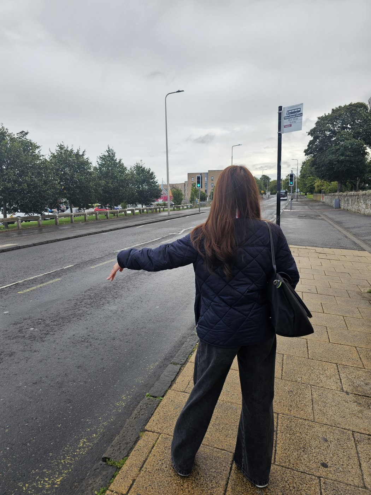
Itu bukan gaya-gayaan. Di sini, kalau kamu tidak memberi isyarat, busnya lewat begitu saja.
Alasannya sederhana kalau dipikir: satu halte bisa dilewati banyak trayek berbeda. Sopir tidak bisa menebak kamu menunggu bus yang mana. Jadi tugas kamu yang memberi tahu — dengan mengulurkan tangan ke arah jalan begitu busnya kelihatan dari kejauhan.
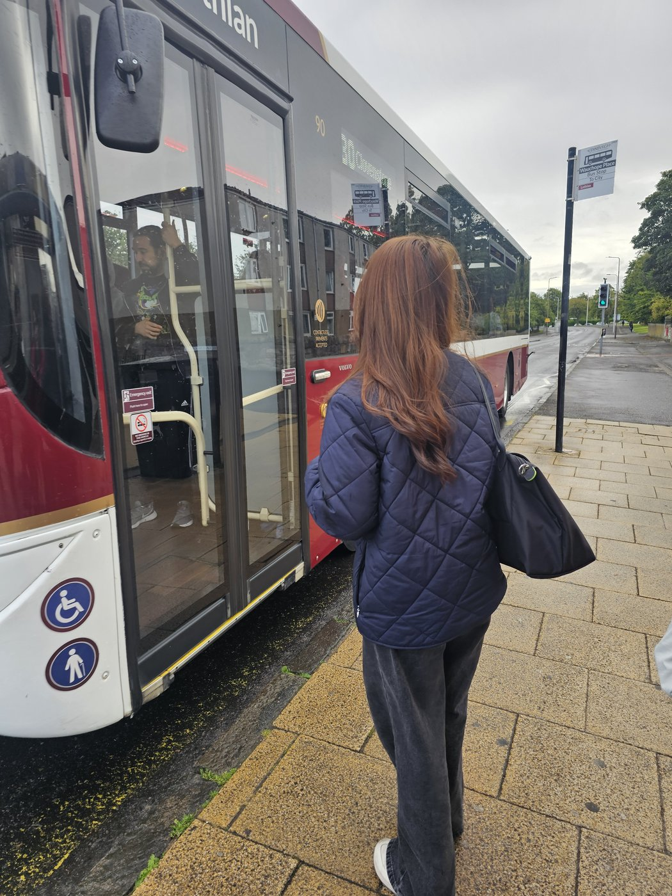
Buat pembaca Indonesia, ini termasuk kejutan yang menyenangkan. Kita cenderung membayangkan transportasi umum di Eropa serba otomatis dan serba terjadwal — dan sebagian memang begitu. Tapi di urusan yang satu ini, logikanya sama persis dengan angkot di rumah: kalau mau naik, kasih tanda.
Satu tambahan yang perlu diingat, dan ini kebalikannya: kalau mau turun, tekan tombol berhenti sebelum haltenya. Bus tidak otomatis berhenti di tiap halte kalau tidak ada yang naik dan tidak ada yang menekan tombol.
Karena letaknya di stasiun, bukan di toko biasa
Penerbangan Justin baru sore. Dan membawa koper besar keliling kota selama setengah hari adalah ide yang sudah dibuktikan buruk di London beberapa hari lalu. Jadi keputusannya gampang: koper dititipkan dulu.
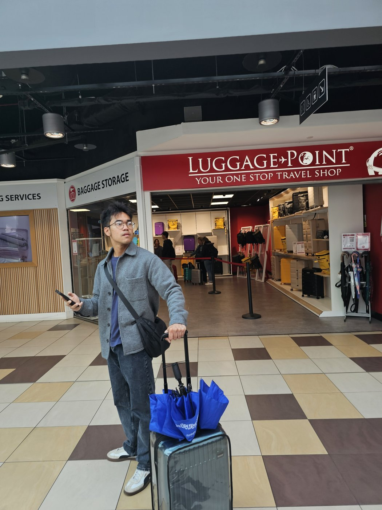
Yang tidak diduga adalah prosedurnya. Ini bukan tempat yang tinggal datang, taruh, bayar.
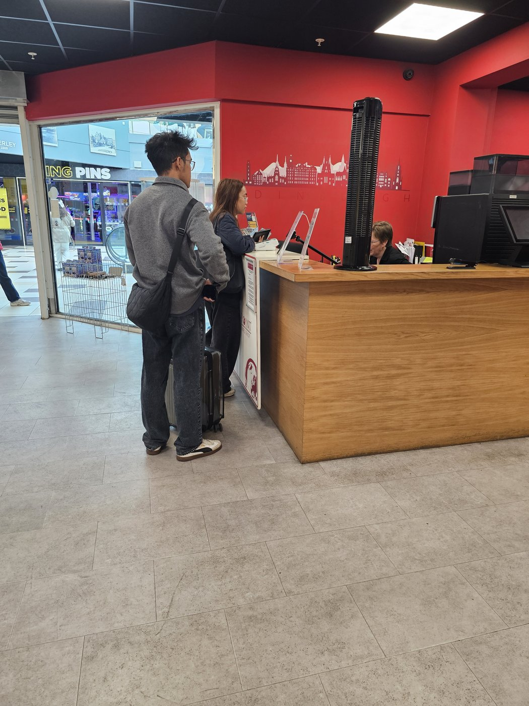
Kelihatannya berlebihan, tapi masuk akal begitu diingat letaknya di dalam kawasan stasiun. Barang yang dititipkan di simpul transportasi diperlakukan lebih hati-hati daripada barang yang dititipkan di toko biasa: harus jelas siapa pemiliknya, siapa yang menaruh, dan siapa yang berhak mengambil.
Jadi catatan buat siapa pun yang mau meniru cara ini: pastikan yang memesan adalah orang yang akan benar-benar datang menaruh dan mengambil kopernya. Kalau tidak, kamu akan berdiri di konter dengan empat koper dan satu nama yang tidak cocok.
Angkanya tertulis besar-besar di badan busnya, dan tetap kalah
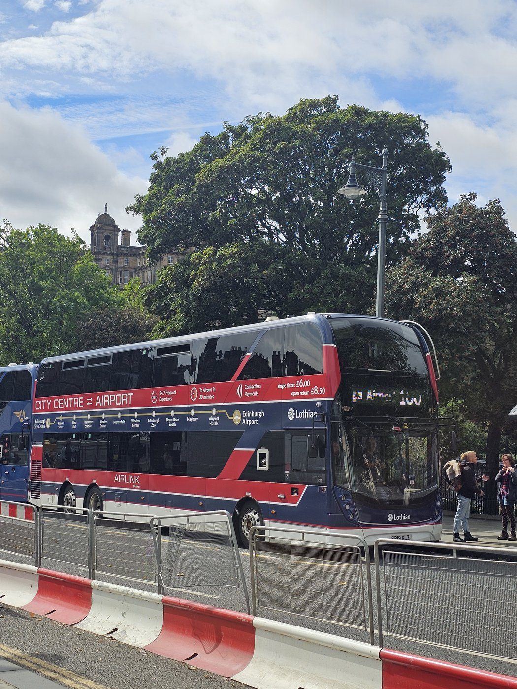
Dibaca dari badan busnya sendiri, apa adanya:
Enam pound untuk sampai ke bandara dalam setengah jam. Bandingkan dengan taksi, yang di kota mana pun ke bandara jarang di bawah angka dua digit — dan selisihnya jadi jelas kenapa bus ini penuh terus.
Tapi ini perlu diluruskan, karena sorenya ternyata lain: Justin tidak naik bus ini. Uber sempat dipertimbangkan lalu dicoret cepat — untuk satu orang ke bandara harganya tidak masuk akal — dan pilihannya akhirnya jatuh ke trem. Bus ini cuma kebetulan lewat di depan kami jam 11.47, dengan seluruh keterangannya tercetak di badannya sendiri.
Dan namanya sudah dua kali muncul di jurnal ini tanpa direncanakan
Jalan kaki tanpa koper, dan yang pertama menagih perhatian berdiri di tepi jalan utama: sebuah menara batu hitam runcing yang tingginya bikin orang otomatis mendongak.
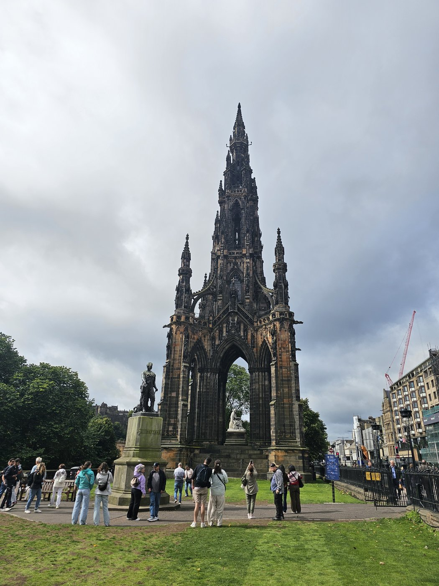
Ini monumen untuk Sir Walter Scott — dan ini pertemuan ketiga kami dengan namanya di perjalanan ini, dua di antaranya tanpa disengaja:
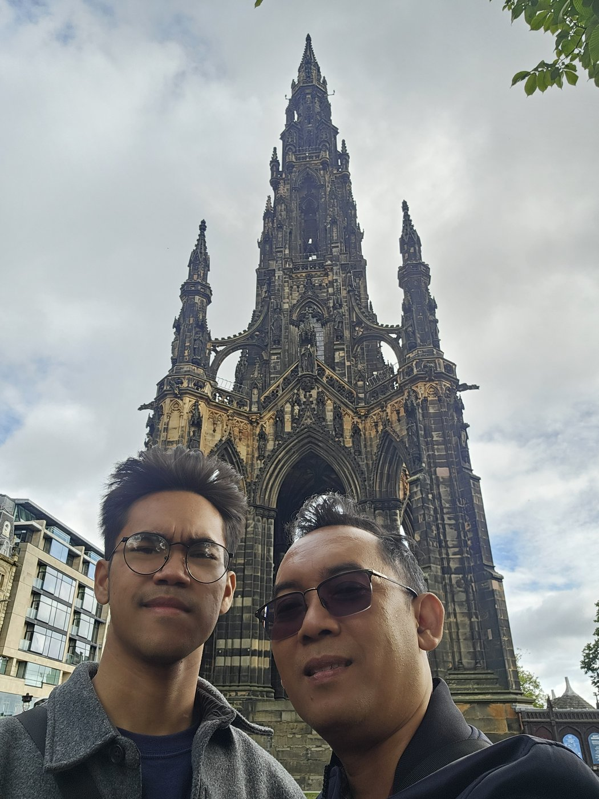
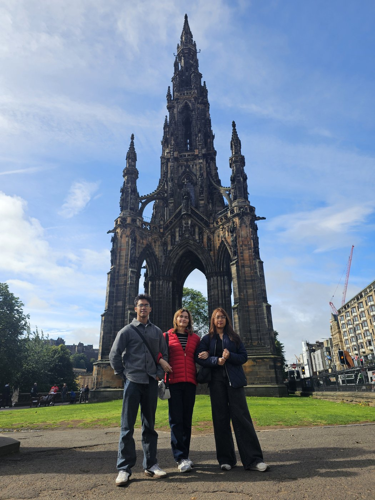
Jam 11.51 dan 12.23. Perhatikan langitnya di dua foto ini: dalam setengah jam berubah dari kelabu jadi biru. Di kota ini itu bukan kebetulan, itu kebiasaan.
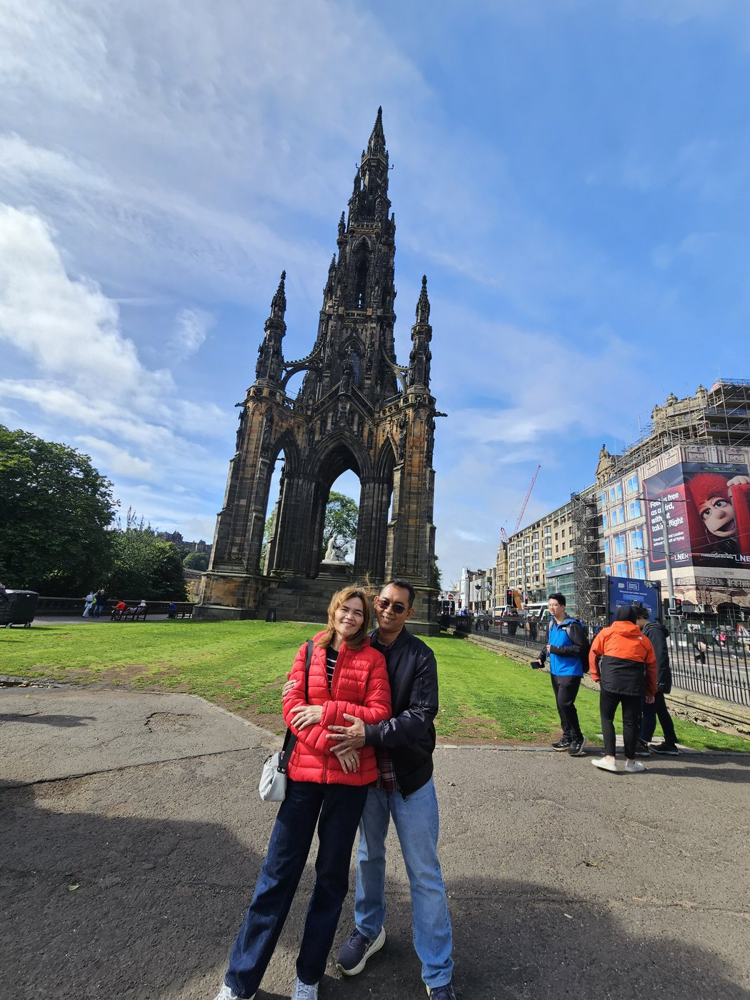
Dan yang layak dipikirkan sebentar: kota ini punya kastil, punya istana, punya katedral, dan punya sejarah perang yang panjang. Tapi monumen terbesar yang berdiri di jalan utamanya dibangun untuk orang yang pekerjaannya menulis cerita.
Yang di zamannya termasuk orang Skotlandia paling terkenal di dunia
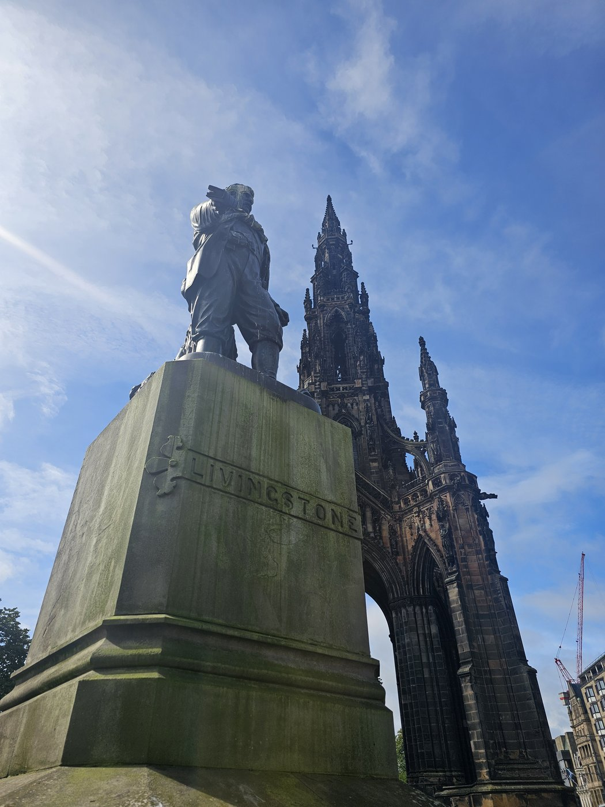
David Livingstone — dokter sekaligus misionaris asal Skotlandia yang pada abad ke-19 melakukan perjalanan panjang menyusuri pedalaman Afrika, dan yang laporannya membuat namanya sangat terkenal di seluruh Kerajaan Inggris pada zamannya.
Perlu ditambahkan satu hal, dan ini bukan untuk merusak fotonya: cara orang menilai tokoh-tokoh seperti ini sekarang jauh lebih berhati-hati daripada waktu patungnya dibuat. Perjalanan-perjalanan itu berlangsung di masa ketika Eropa sedang membagi-bagi Afrika, dan pengetahuan yang dibawa pulang para penjelajah ikut dipakai untuk itu — terlepas dari niat orangnya sendiri.
Kota ini sendiri sudah mulai menuliskannya terus terang. Papan sambutan di pelataran universitasnya, yang kemarin dibaca, bahkan mencantumkan tautan khusus soal keterkaitan sejarah kampus itu dengan perbudakan dan rasisme, serta apa yang mereka lakukan sekarang. Ditulis di papan sambutan, bukan disembunyikan di arsip.
Yang di Hari 13 cuma dilihat dari peron, hari ini dijalani dari dalam
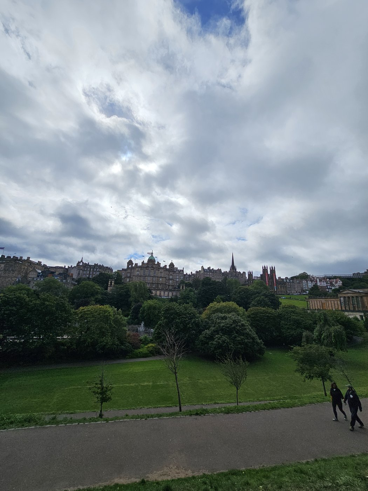
Ini lembah yang sama yang dijelaskan waktu baru sampai dua hari lalu: dulunya danau buatan yang sengaja dijadikan pertahanan alami untuk kota di atas bukit, lalu dikeringkan, lalu sebagiannya jadi tempat rel kereta dan sebagiannya lagi jadi taman ini.
Waktu itu lembahnya dilihat dari peron stasiun, sambil mendongak. Hari ini dilihat dari dalam tamannya, sambil berjalan. Tempat yang sama, dua sudut pandang, jeda dua hari.
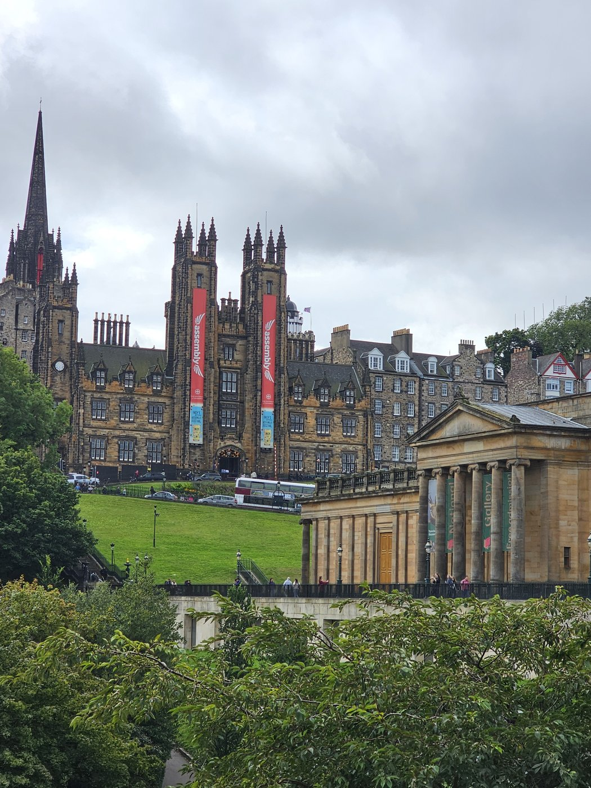
Jadi bahkan di hari pertama bulan September, spanduk-spanduk festival itu masih terpasang. Kota ini butuh waktu untuk melepas kostumnya.
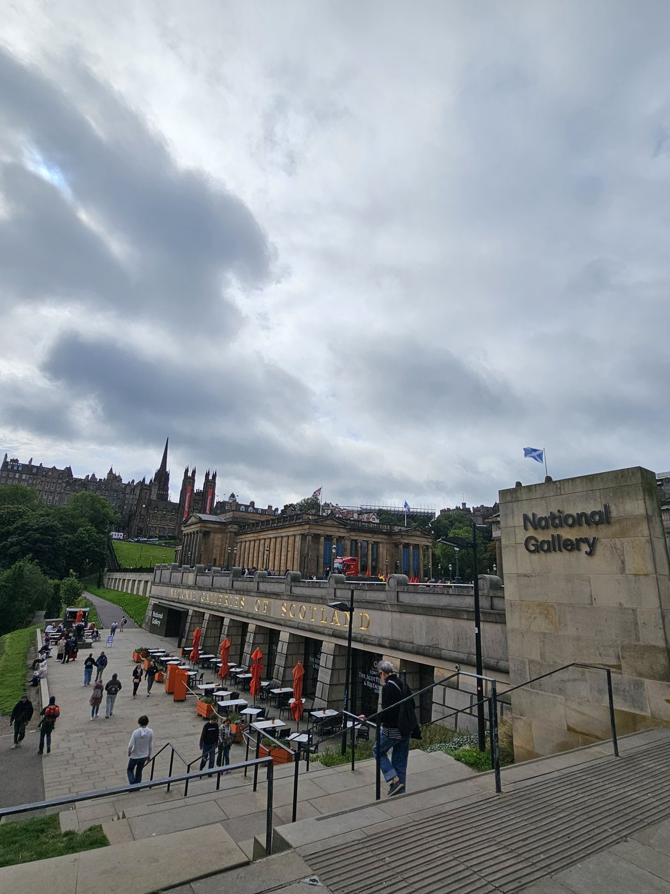
Satu hal yang layak dicatat siapa pun yang menyusun anggaran perjalanan: galeri dan museum nasional di Inggris dan Skotlandia umumnya gratis dimasuki. Koleksi tetapnya bisa dilihat tanpa membeli tiket; yang berbayar biasanya cuma pameran khusus. Di kota yang harga penginapannya bikin kaget, itu penyeimbang yang nyata.
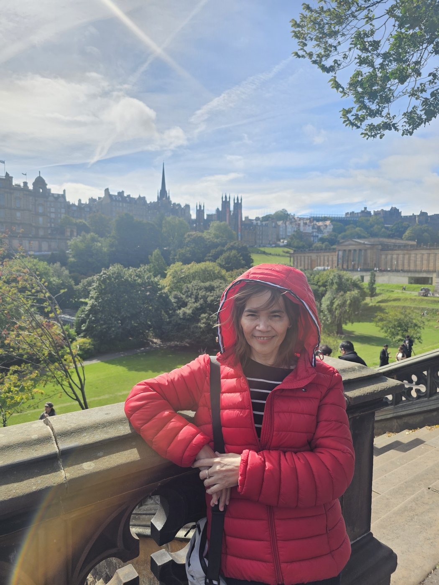
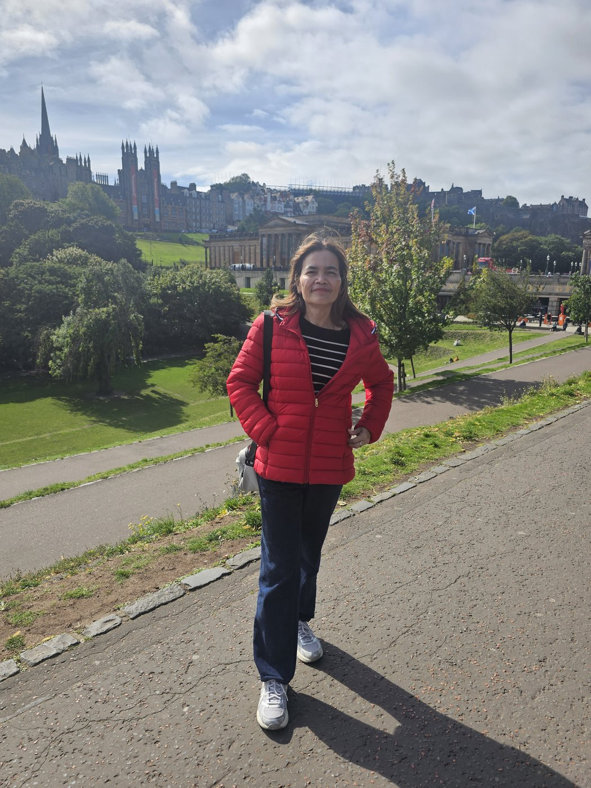
Jam 12.26 dan 12.29. Dan inilah gunanya menitipkan koper tadi pagi — tangan kosong, jalan pelan, tidak ada yang perlu dijaga.
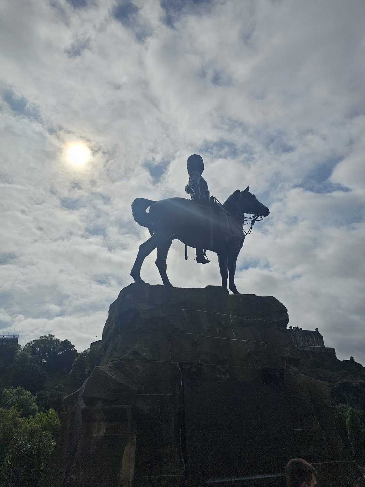
Dan orang-orang di bangku taman itu jelas sudah hafal
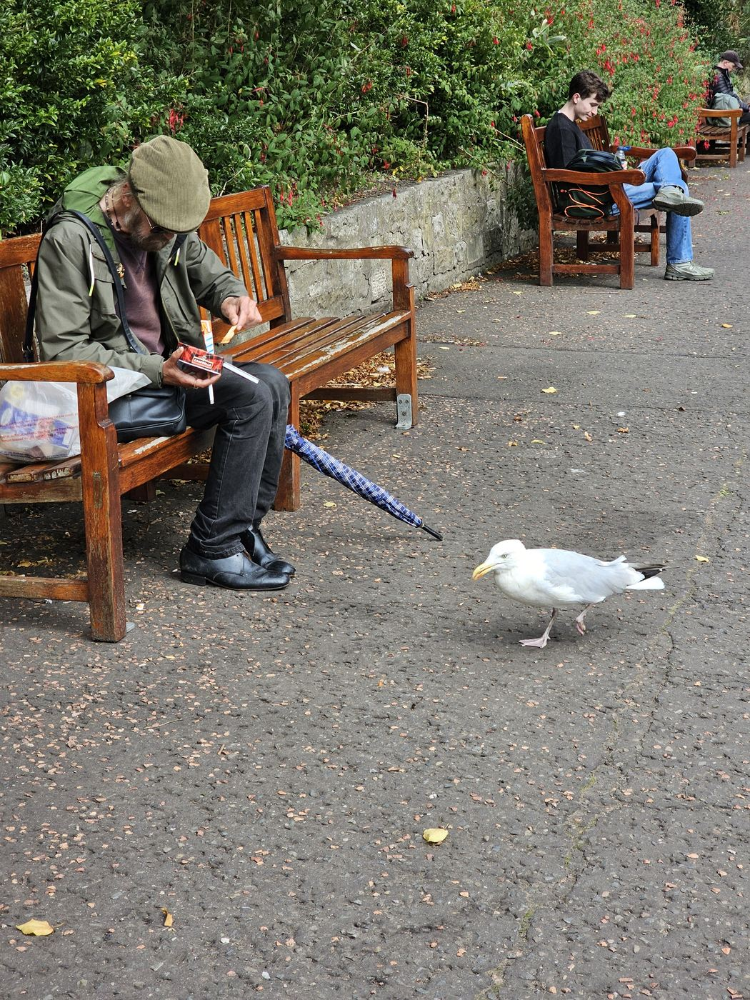
Ini camar herring (herring gull) — badan besar, kepala putih, paruh kuning dengan bercak merah, kaki merah muda. Edinburgh memang kota tepi laut: muara Firth of Forth ada beberapa kilometer saja di utara. Tapi burung-burung ini sudah lama tidak lagi hidup dari laut.
Mereka bersarang di atap-atap gedung batu di tengah kota, dan mereka belajar membaca manusia. Orang yang duduk di bangku sambil memegang bungkusan kertas adalah tanda yang sangat jelas. Dan yang bikin foto ini lucu bukan burungnya, tapi orang-orangnya: tidak ada yang kaget, tidak ada yang mengusir. Semuanya sudah tahu bagaimana akhirnya.
Satu hal yang mungkin mengejutkan: meskipun kelihatan ada di mana-mana, camar herring justru masuk daftar merah konservasi di Britania. Populasi yang berkembang biak di pesisir turun tajam dalam beberapa dekade terakhir. Yang bertambah adalah yang pindah ke kota — ke atap, ke tempat sampah, ke bangku taman. Jadi yang kita lihat di sini sebetulnya bukan tanda mereka berlimpah, melainkan tanda mereka pindah rumah.
Dan tetap saja: jangan diberi makan. Bukan karena galak, tapi karena sekali satu burung tahu tanganmu mengeluarkan sesuatu, kamu tidak akan berhadapan dengan satu burung lagi.
Naik satu lantai, dan yang berubah bukan cuma pemandangannya
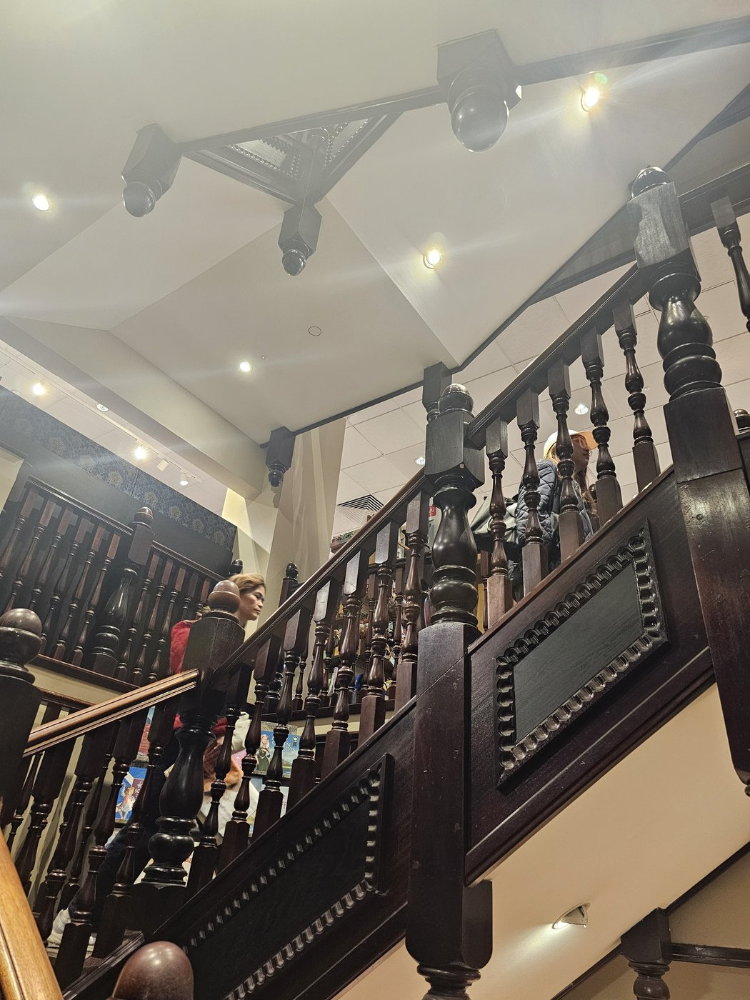
Sore itu berhenti di sebuah toko buku yang punya kafe di lantai atasnya — model yang sudah lama jadi standar di Inggris. Bukunya di bawah, kopinya di atas, dan tidak ada yang mengusirmu kalau kamu duduk lama.
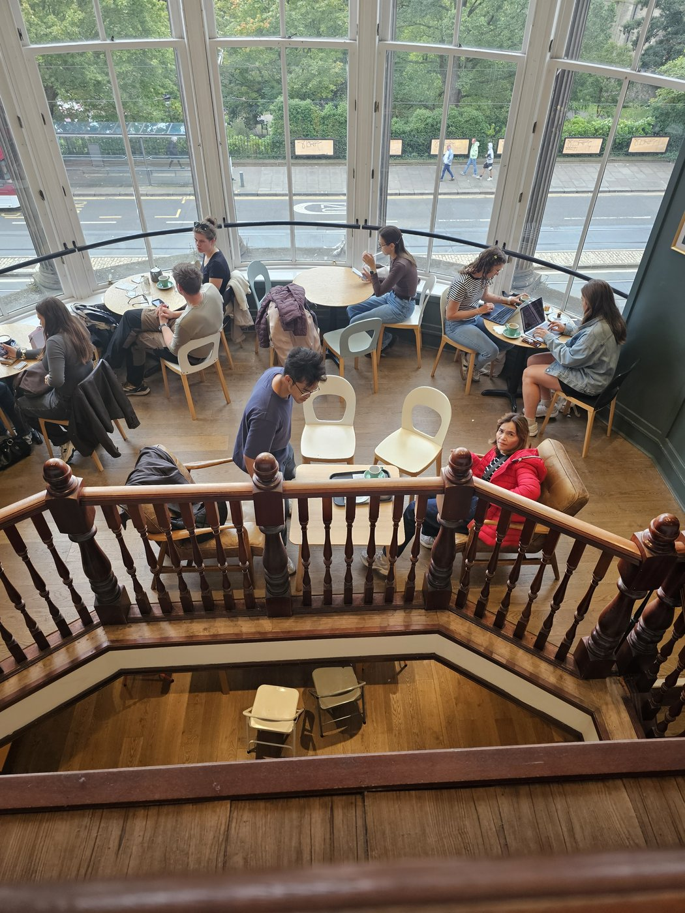
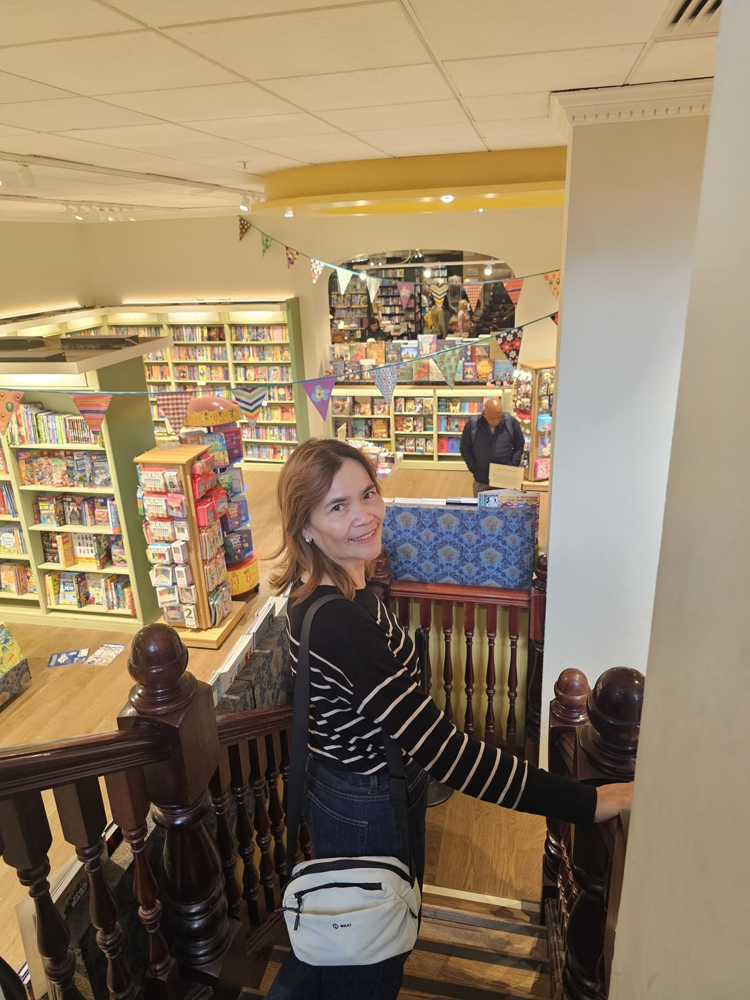
Jam 14.00 dan 14.04. Kiri: kafenya, dengan jendela lengkung sepanjang dinding. Kanan: bagian buku anak-anak, lengkap dengan bendera segitiga — bagian yang paling ramai warnanya di seluruh toko.
Perhatikan orang-orang di foto kiri: hampir semuanya membuka laptop. Ini bukan kafe wisata. Ini ruang kerja umum yang kebetulan menjual kopi, di kota yang sedang penuh sesak karena festival.
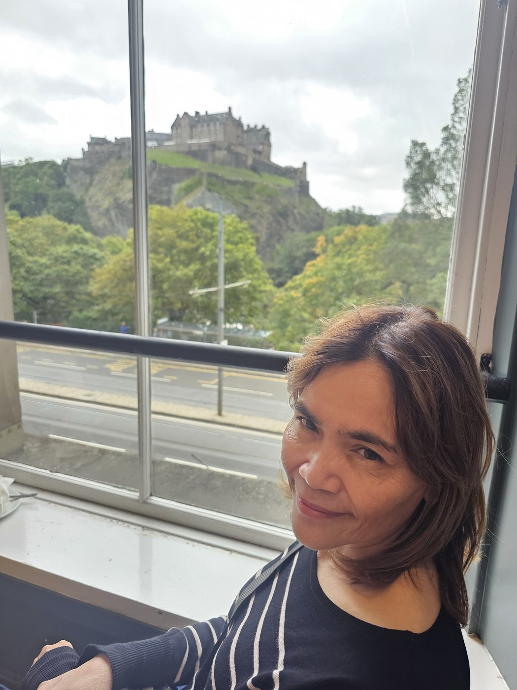
Ini pemandangan yang di tempat lain harus dibayar. Restoran-restoran dengan sudut seperti ini memasang harga khusus untuk mejanya. Di sini tiket masuknya cuma secangkir kopi, dan kalaupun tidak beli apa-apa, masuk ke tokonya tetap gratis.
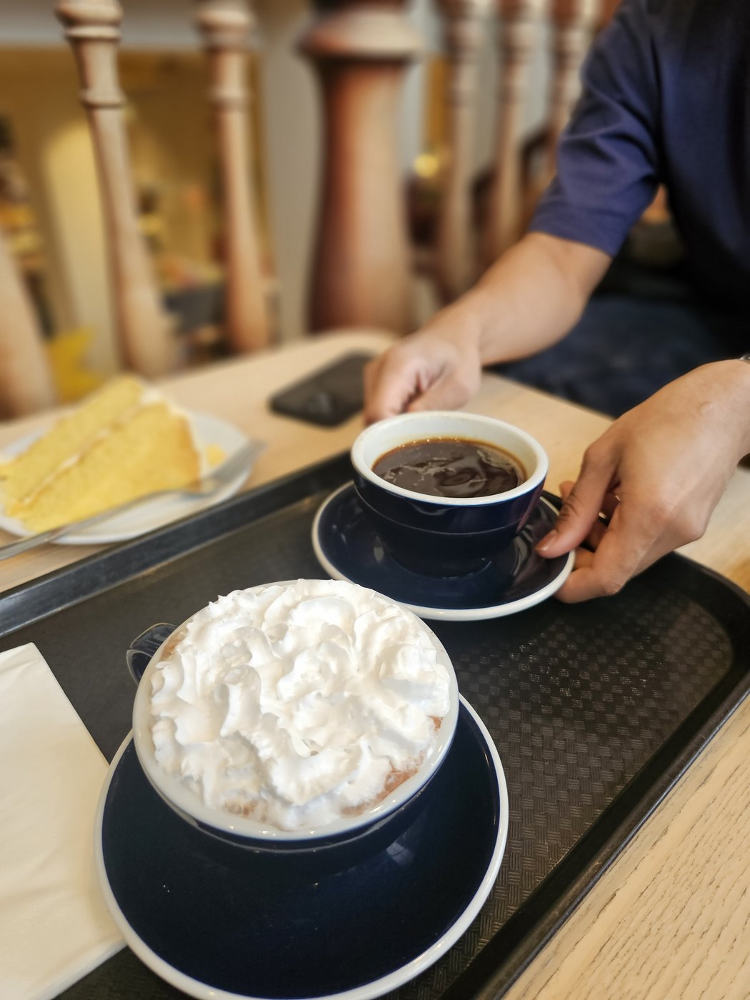
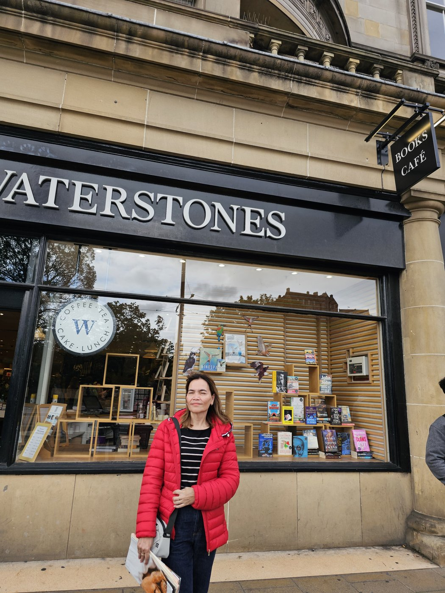
Satu jam lima menit di dalam, untuk dua gelas minuman. Di kota yang sedang di puncak musim festival, itu barangkali kursi termurah yang menghadap ke kastil.
Yang kemarin dicari dan tidak ketemu, hari ini muncul dua kali tanpa dicari sama sekali
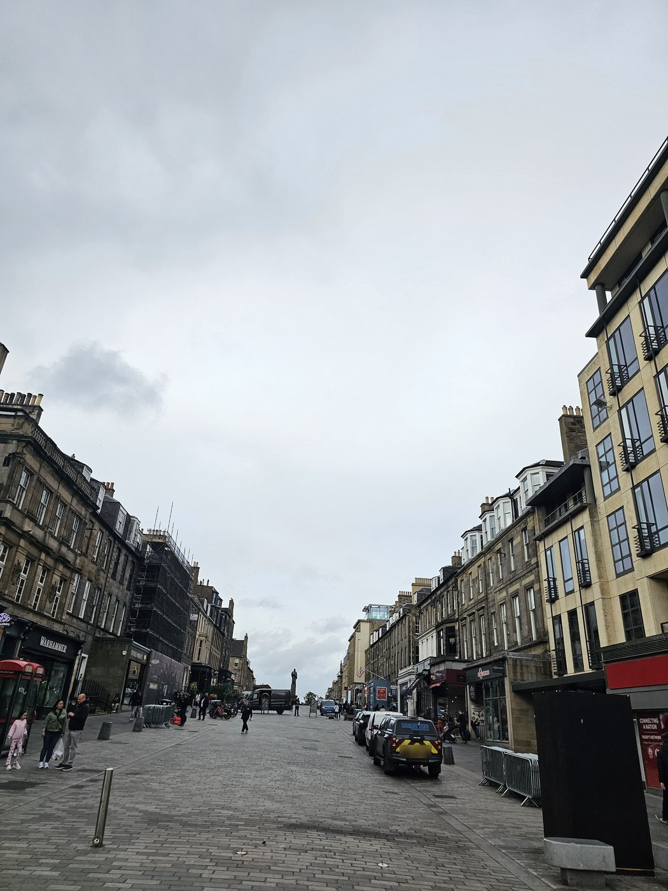
Sebentar soal patung itu, karena polanya sudah terlalu sering muncul untuk dianggap kebetulan. Di jurnal ini saja, dalam tiga hari, sudah lewat: seorang filsuf, seorang ekonom, seorang penjelajah, seorang pendeta, seorang prajurit berkuda, dan seorang penulis novel. Di kawasan Kota Baru Edinburgh, hampir setiap persimpangan besar punya orang yang berdiri di tengahnya. Bukan air mancur, bukan tugu — orang.
Lalu tujuh detik kemudian, kamera menoleh ke arah lain.
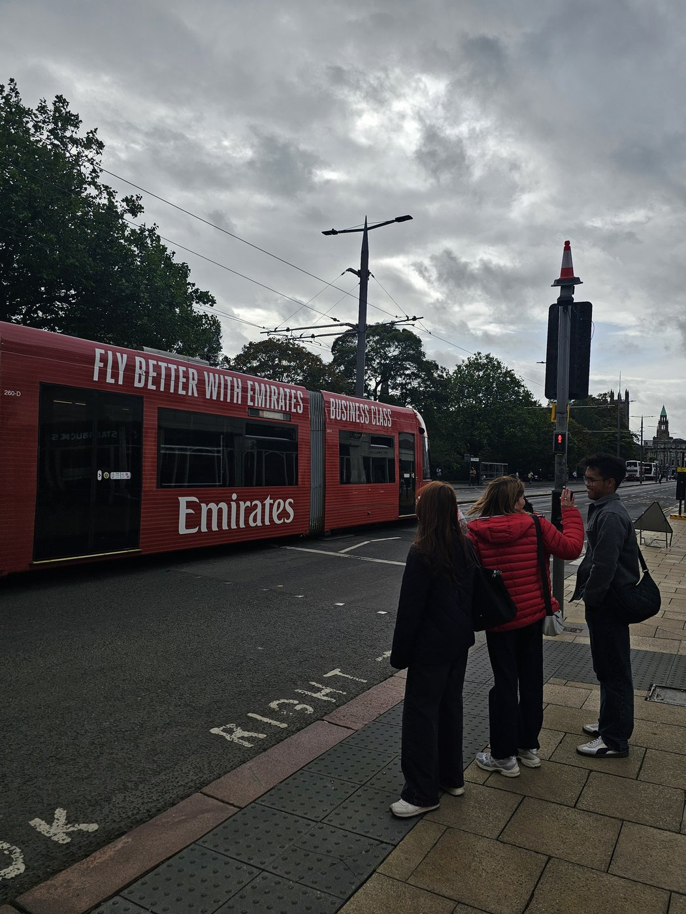
Kemarin kerucut semacam ini sempat dicari-cari di seluruh foto Hari 14, satu per satu sampai ke resolusi penuh, dan hasilnya nihil. Hari ini kebalikannya: tidak dicari sama sekali, dan malah muncul dua kali dalam dua puluh menit. Yang satu ini, dan satu lagi nanti di halte trem.
Yang paling terkenal dari tradisi ini sebetulnya bukan di Edinburgh, tapi di Glasgow — patung Duke of Wellington di sana hampir selalu berkerucut, dan sudah begitu selama puluhan tahun sampai jadi ikon kota. Tapi kebiasaannya jelas menyeberang. Dan yang menarik dari foto ini: yang dikerucuti bukan patung tokoh besar, cuma tiang lampu penyeberangan biasa. Tidak ada yang disindir, tidak ada yang dilecehkan. Cuma satu orang, entah kapan, memutuskan bahwa tiang itu akan lebih baik kalau ada topinya.
Berdiri di taman yang sama, beberapa ratus langkah saja jaraknya
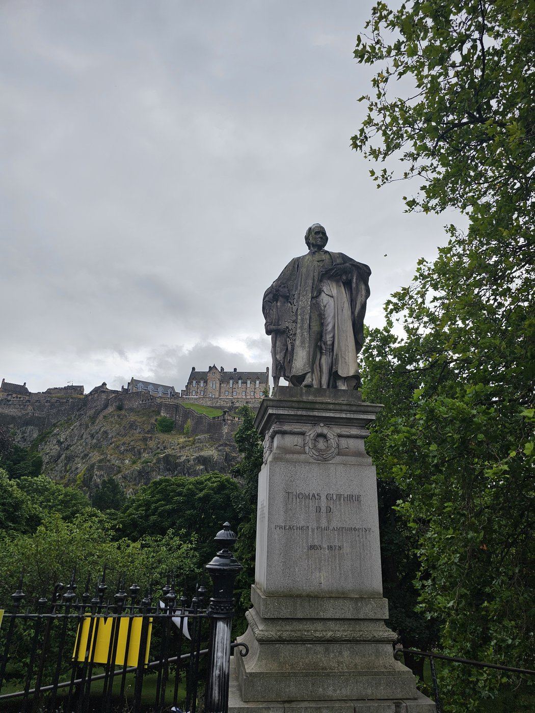
Dua kata di alas itu — pengkhotbah dan dermawan — masih terlalu sopan untuk menjelaskan kenapa orang ini dapat patung. Guthrie adalah pendeta yang pada pertengahan abad ke-19 melihat sesuatu yang waktu itu dianggap biasa saja di Edinburgh: anak-anak yang tidur di gang, mengemis, dan tidak mungkin masuk sekolah mana pun.
Jawabannya adalah ragged schools — harfiah “sekolah compang-camping”. Sekolah gratis untuk anak-anak yang paling miskin, yang tidak cuma memberi pelajaran tapi juga memberi makan, karena anak yang lapar tidak bisa belajar. Guthrie menulis pembelaan panjang untuk gagasan itu dan berkeliling mencari dana sampai sekolahnya berdiri.
Yang layak diingat: ini terjadi puluhan tahun sebelum pendidikan dasar gratis jadi kewajiban negara. Waktu itu, kalau orang tuamu tidak mampu, kamu memang tidak sekolah. Titik.
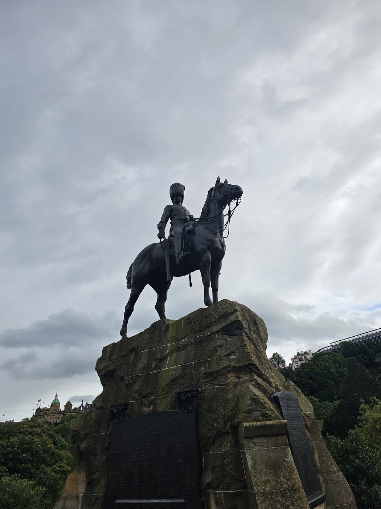
Papan besar di bawahnya terbaca setelah dizoom dan dicerahkan: “IN MEMORY OF … THE ROYAL SCOTS GREYS … 1899–1902”, disusul deretan nama yang panjang sekali. Angka tahun itu menunjuk ke satu perang: perang di Afrika Selatan, dan Royal Scots Greys adalah resimen kavaleri Skotlandia yang dikirim ke sana.
Jadi dalam beberapa ratus langkah, taman yang sama memuat dua hal ini berdampingan: seorang pendeta yang dikenang karena mengambil anak-anak dari jalanan, dan sebuah resimen yang dikenang karena dikirim ke perang kolonial di benua lain. Keduanya dibangun oleh kota yang sama, di zaman yang kurang lebih sama, dan keduanya masih berdiri.
Tidak perlu ada kesimpulan dari itu. Cukup dicatat bahwa taman kota memang begitu: dia menyimpan apa saja yang dianggap layak dikenang pada zamannya, dan tidak pernah menyortirnya ulang.
Sembilan detik kemudian, namanya muncul lagi — di dinding sebuah hotel
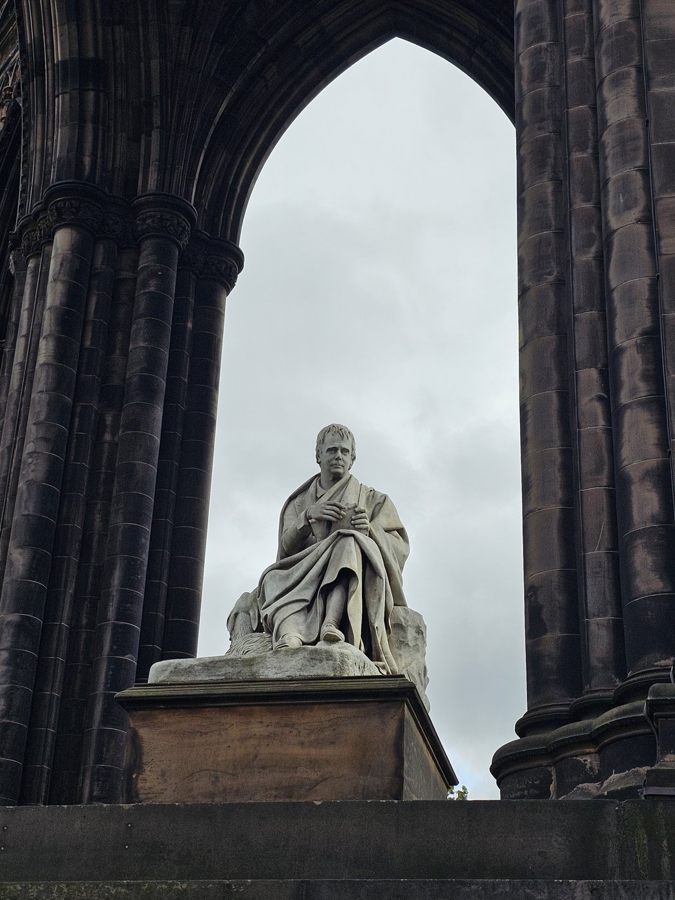
Kontrasnya sengaja dibuat begitu. Monumennya batu gelap, tinggi, runcing, dan sudah menghitam kena jelaga berpuluh tahun. Di tengahnya, di ruang terlindung di antara empat lengkung, duduk sosok marmer putih Carrara yang tetap terang meski semua di sekelilingnya gelap.
Dan perhatikan kakinya: ada anjing berbaring di sana. Itu Maida, anjing pemburu jenis deerhound miliknya sendiri. Jadi patung ini bukan menggambarkan seorang tokoh nasional yang sedang berpose. Dia digambarkan sedang duduk membaca, dengan selimut di pangkuan dan anjingnya di kaki — persis seperti orang yang sedang di rumah.
Sembilan detik kemudian kamera menoleh ke seberang jalan.
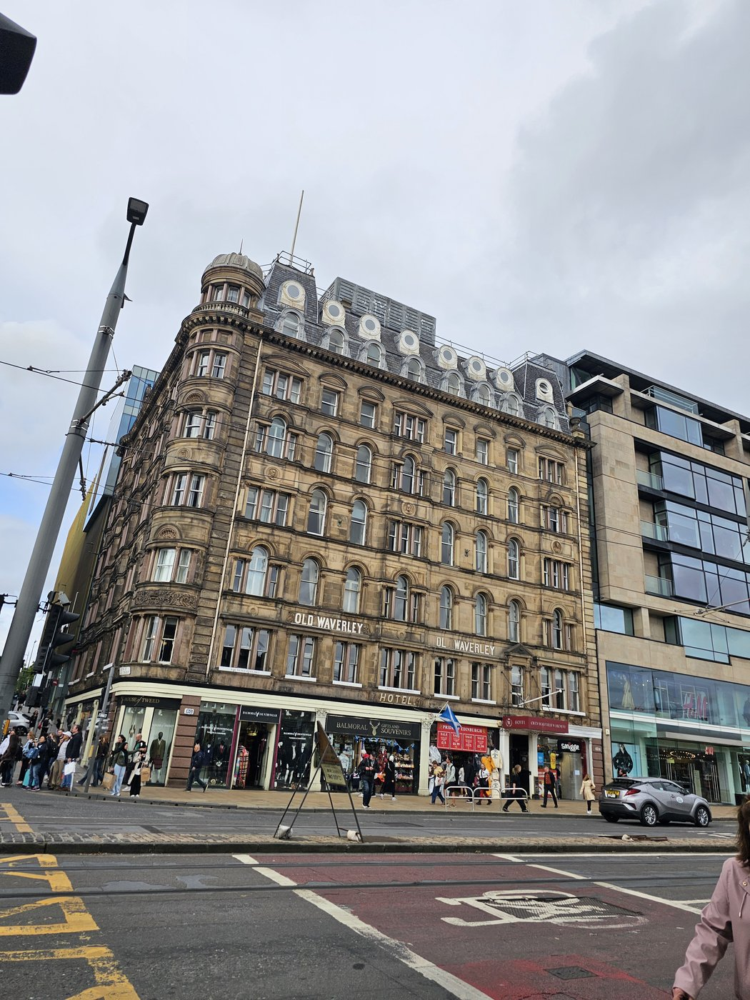
Jadi begini hitungannya sekarang. Satu judul novel yang terbit lebih dari dua abad lalu sudah muncul di jurnal ini sebagai: nama stasiun tempat kami turun, nama tokoh di papan sebuah gang sempit, monumen terbesar di jalan utamanya, dan sekarang nama sebuah hotel yang dipahat besar-besar di dinding batunya.
Tidak ada satu pun dari itu yang kami rencanakan. Kami cuma jalan kaki, dan kotanya terus menyebut nama yang sama.
Bukan bus bandara, bukan Uber
Sebelum ke halte, mampir dulu mengambil koper yang pagi tadi dititipkan. Dan di sini aturan yang tadi pagi terasa berlebihan itu jadi ada gunanya: yang menaruh dan yang mengambil orang yang sama, nama yang sama, identitas yang sama.
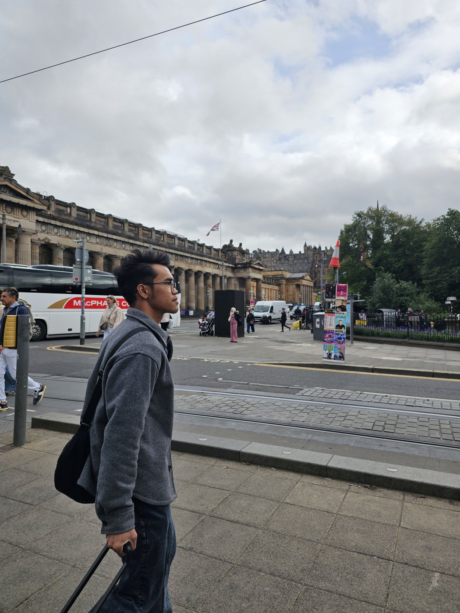
Pilihan ke bandara sebetulnya ada tiga, dan ketiganya sempat ditimbang:
Catatan jujur: tarif trem yang dibayar tidak tercatat di foto mana pun, jadi angkanya tidak ditulis di sini. Yang tercatat cuma caranya.
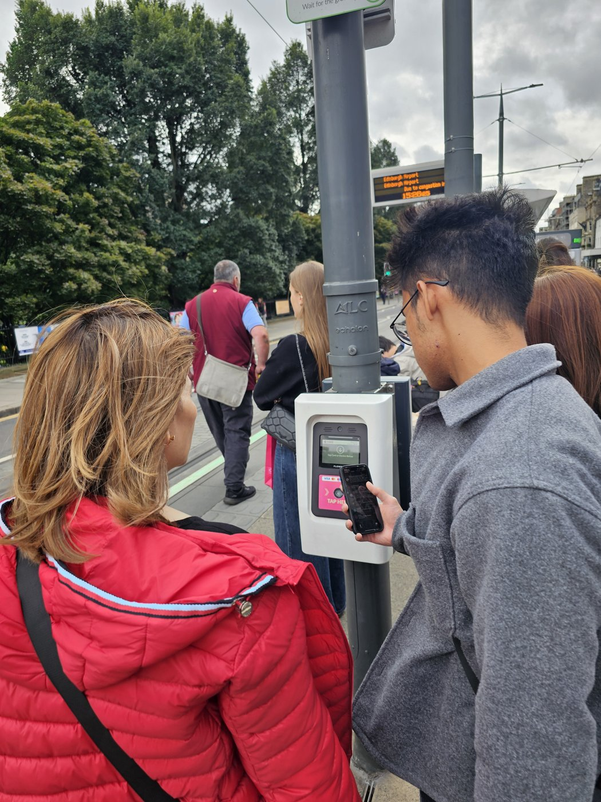
Dan di papan jadwal oranye di atas kepala mereka, terbaca setelah dizoom: “Edinburgh Airport” dua baris berturut-turut, disusul peringatan layanan “Due to congestion…”, lalu jam berjalan: 15:26:25.
Foto ini sendiri bertanggal 15.26.28 menurut kameranya. Selisihnya tiga detik. Jadi seluruh jam yang tertulis di halaman ini — dan di semua halaman jurnal ini — memang jam yang sebenarnya, bukan perkiraan yang dikira-kira belakangan.
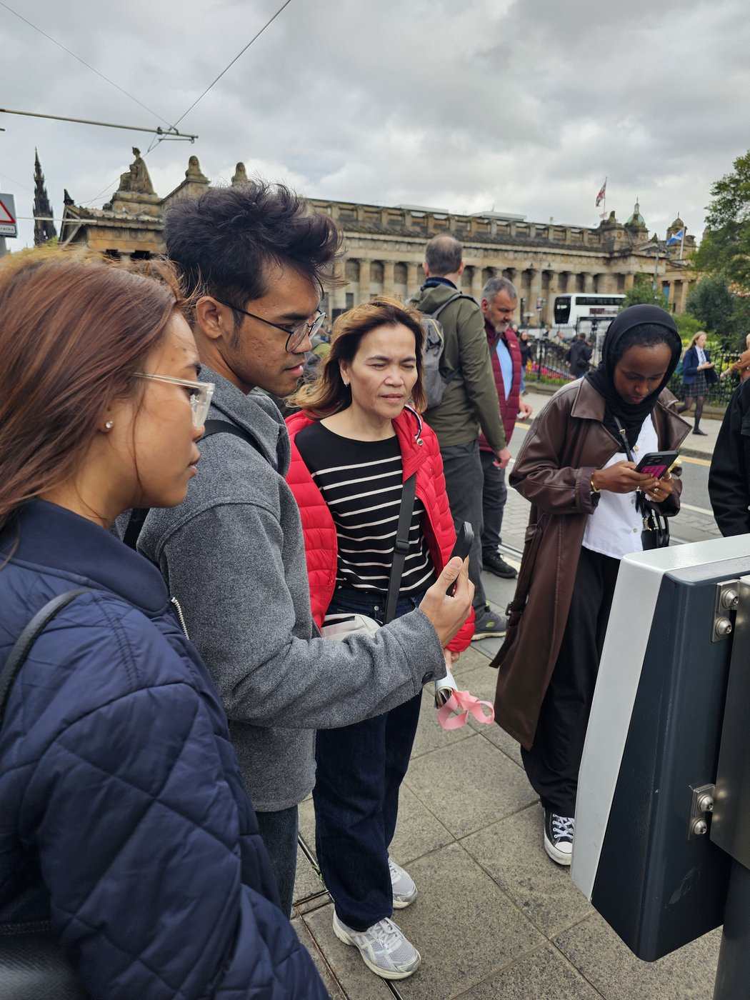
Pesawatnya berangkat 19.30 ke Köln, lalu dilanjutkan lewat darat ke Aachen — kota di ujung barat Jerman, menempel ke perbatasan Belanda dan Belgia, sekitar tujuh puluh kilometer dari Köln. Di sana masih ada tesis yang harus diselesaikan semester ini.
Begitulah biasanya perpisahan yang sebenarnya terjadi: tidak ada aba-aba, tidak ada musik. Ada jadwal, ada koper, ada mesin yang harus ditempel, dan trem yang datang tepat waktu.
Sampai ketemu lagi, Justin. Semoga tesisnya kelar semester ini.